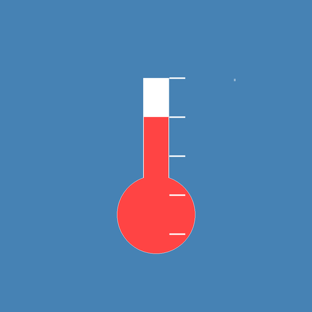

EtoTHSensorMonitor
iOS向け環境センサー監視アプリ
最新バージョン: 2.0.2 (ビルド 1)
2026年9月16日 リリース
アプリをインストール / 更新
📱 インストール / 更新手順：
- 上記の「アプリをインストール / 更新」ボタンをタップ
- 「インストール」または「置き換える」をタップして確認
- ダウンロード完了を待つ（数分かかる場合があります）
- ホーム画面にアプリアイコンが表示されたらタップ
- 初回インストール時は「信頼されていない開発者」エラーが出たら：
設定 > 一般 > VPNとデバイス管理 > プロファイルを信頼
🔄 アップデートについて：
- 既存アプリがある場合： 自動的に最新バージョンで置き換えられます
- データ保持： アプリ内設定とデータは保持されます
- バージョン確認： アプリ起動時に設定画面でバージョンを確認できます
ℹ️ アプリ情報：
- 最新バージョン: 2.0.2 ビルド 1 (2026年9月16日)
- Bundle ID: com.etokoji.EtoTHSensorMonitor
- 対応OS: iOS 17.0以上
- 主な機能:
- 温度・湿度・気圧・電圧データのリアルタイム表示
- Bluetooth LE通信対応
- iPad mini / Mac向けレスポンシブレイアウト
- 動的フォントサイズ調整
- ウィンドウサイズに応じた自動調整（Mac）
🆕 バージョン 2.0.2 の主な内容：
- ホーム画面からアプリ情報（バージョン）を確認できるようにした
⚠️ 注意事項：
- iOSデバイスでのみインストール可能です
- 初回起動時は「信頼されていない開発者」の設定が必要です
- カスタムファームウェア対応のESP32デバイスが必要です